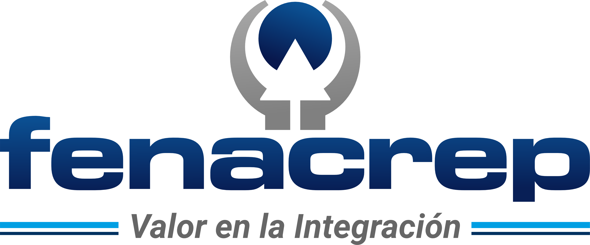
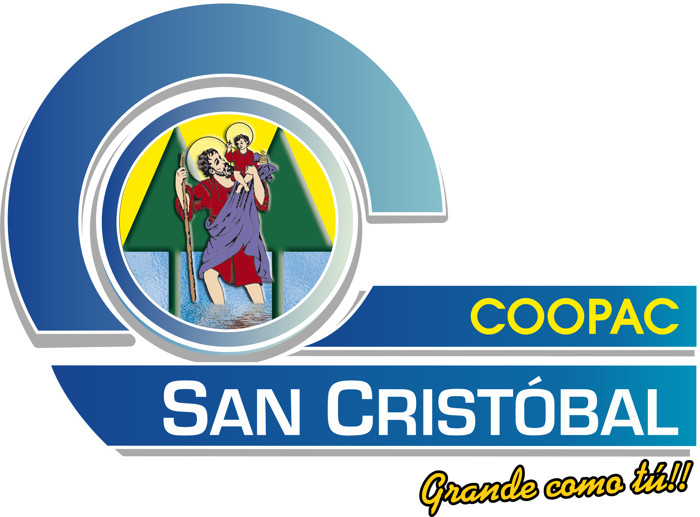
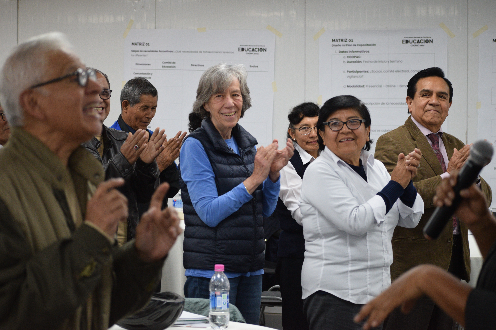
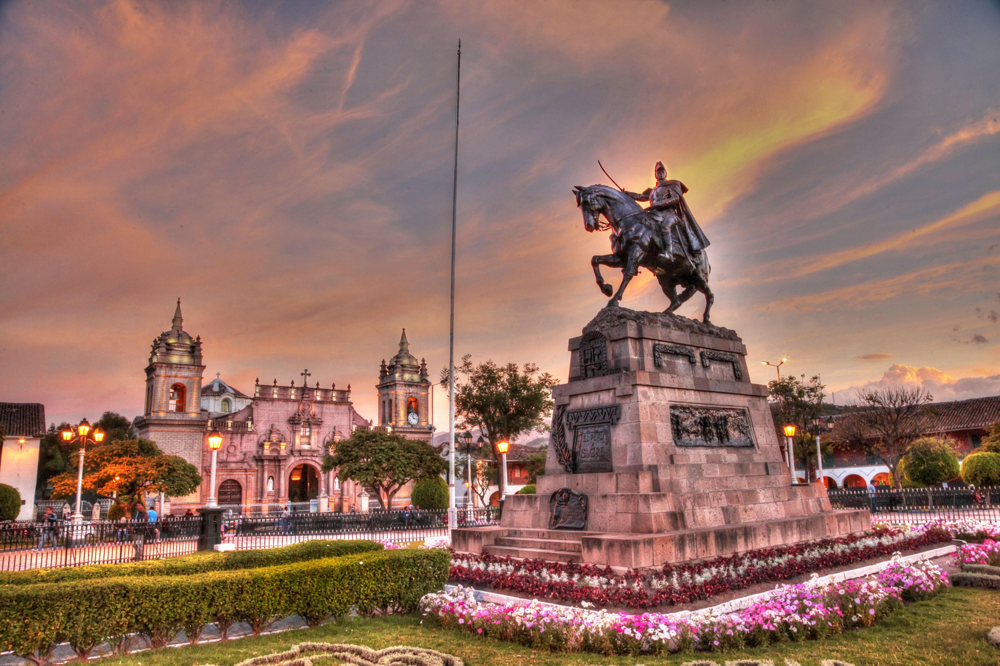

Planificar
Diseñar planes educativos alineados a necesidades reales, objetivos institucionales y normativa vigente.
Del plan a la acción: Innovar, medir y transformar la educación cooperativa.



Los Comités de Educación desempeñan un papel fundamental en la formación de los socios y en el fortalecimiento de la identidad cooperativa. Hoy, este desafío exige ir más allá de la organización de actividades educativas: implica planificar estratégicamente, medir resultados y generar un impacto real en la cooperativa.
El V Encuentro será un espacio para aprender, intercambiar experiencias y conocer herramientas prácticas aplicables a la realidad de cada COOPAC.
Diseñar planes educativos alineados a necesidades reales, objetivos institucionales y normativa vigente.
Explorar metodologías, experiencias y herramientas aplicables a la educación cooperativa.
Convertir las iniciativas educativas en resultados que puedan ser observados, seguidos y comunicados.
Fortalecer la participación, la gobernanza y el valor que la educación genera para los socios.
Ex Ministro de la Producción
Consultor internacional especialista
Gerente de Responsabilidad Social, SICREDI
Profesora miembro del Centro UC Estudios de Vejez y Envejecimiento (CEVE)
Directora Ejecutiva, Juntos con los Mayores
Consultor Senior de e-learning, DGRV América Latina
Recepción, entrega de materiales y espacio inicial de encuentro entre representantes de las COOPAC.
Presentación del propósito del V Encuentro y de los principales desafíos que orientarán la jornada.
Presentador: Vladimiro Vila – Presidente del Comité de Educación, FENACREP.
Una mirada al papel de la educación en el fortalecimiento de la participación, la gobernanza y la sostenibilidad del modelo cooperativo.
Invitado: César Quispe Luján – Ex Ministro de la Producción.
Cómo identificar necesidades reales, definir objetivos y públicos, y convertirlos en acciones educativas con resultados que puedan ser medidos.
Ponente: Rosa Gutiérrez – Consultor internacional especialista (Perú).
Pausa de networking.
Aplicación de criterios para revisar el alineamiento del plan con las necesidades de los socios, los objetivos de la cooperativa, el marco institucional y el uso del Fondo Educativo.
Facilitan: Rosa Gutiérrez y Ferlaino Quispe – Consultor de Asistencia Técnica, FENACREP (Perú).
Una mirada desde la experiencia de SICREDI sobre cómo articular estrategia, programas, indicadores y seguimiento para convertir las iniciativas educativas y sociales en resultados sostenibles.
Ponente: Keyla Copes – Gerente de Responsabilidad Social, SICREDI (Brasil).
Espacio de pausa y encuentro.
Trabajo aplicado sobre los planes reales de las COOPAC para identificar brechas, revisar actividades e indicadores y definir oportunidades concretas de mejora.
Facilitan: Rosa Gutiérrez y Ferlaino Quispe – FENACREP.
Pausa de networking.
Conversación sobre envejecimiento, participación y aprendizaje para comprender mejor a los socios mayores y diseñar experiencias educativas pertinentes, inclusivas y que favorezcan su participación activa.
Invitadas: Sara Caro y Sofía Troncoso (Chile).
Experiencias y herramientas para acercar los principios cooperativos a niños y jóvenes mediante metodologías educativas, colaborativas y apoyadas en tecnología.
Ponente: Rosi Rivarola – Consultor Senior de e-learning, DGRV América Latina (Paraguay).
COOPAC invitadas compartirán iniciativas concretas, aprendizajes y resultados que muestran diferentes formas de fortalecer la educación y participación de sus socios.
Modera: Rosi Rivarola – DGRV América Latina.
Principales aprendizajes, compromisos y cierre del V Encuentro.
Integrantes de los Comités de Educación.
Miembros de los Consejos de Administración y de Vigilancia.
Gerentes y funcionarios de las COOPAC.
Responsables de la educación cooperativa y educación financiera.
Precios incluyen IGV.
por participante
por participante · 3 o más inscritos
por participante
por participante · 3 o más inscritos
Participación en todas las conferencias, talleres y paneles.
Material digital del evento.
Certificado de participación.
Coffee break y almuerzo.
Espacios de networking con representantes de COOPAC de todo el país.
Auditorio COOPAC San Cristóbal de Huamanga
Portal Unión N.° 033, Plaza Mayor de Huamanga, Ayacucho.

Completa tus datos para iniciar tu pre-registro en el V Encuentro Nacional de Comités de Educación COOPAC 2026.
El pre-registro no confirma automáticamente la participación. La participación estará sujeta a la confirmación escrita por parte de la organización.
Banco: Banco de Crédito del Perú (BCP)
Cuenta Recaudadora: 193-2161414-0-63
CCI: 002-193-002161414063-16
RUC: 20101274919
Razón Social: Federación Nacional de Cooperativas de Ahorro y Crédito del Perú – FENACREP
Pagos sujetos a detracción.
Para inversiones mayores a S/ 700: 88 % del monto total a la Cuenta Recaudadora BCP N.° 193-2161414-0-63 y 12 % correspondiente a la detracción a la Cuenta del Banco de la Nación N.° 00-021-012890.
Una vez realizado el pago, envíe el comprobante a escuela@fenacrep.org para confirmar su inscripción.